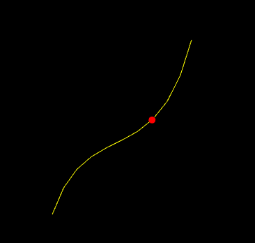

The goals of this lab are to implement
The interpolation assignment has been added to your AnimationFramework repository. To get the source, run
> cd cs56/AnimationToolkit > git pull > cd build > cmake ..; make
You should now have a new directory under assignments called a2-interpolation.
In this assignment, you will interpolate between points using linear interpolation. \[ p(t) = (1-t) p_0 + t p_1 \]
And cubic interpolation with Bezier curves
\[
p(t) = (1-t)^3 b_0 + 3t(1-t)^2 b_1 + 3t^2(1-t) b_2 + t^3 b_3
\]
A color gradient uses linear interpolation to gradually change from one color to another based on position. In class, we computed a gradient in the demo colorLerp2.cpp
For this question, modify the code in gradient.cpp to implement a 2D gradient. Your program should open a square window and draw NxN cubes to fill it. The color of each cube will be a function of four colors and the cube's position. The four colors will correspond to the four corners of the screen: NE, SE, SW, NW.
To run your program from the build directory, type
build> ../bin/a2-gradient
Let's suppose that
A 2D gradient is computed in two steps. Suppose our cube is at position $(p_x, p_y)^T$.
First, we interpolate from west to east. Let $t^x \in [0,1]$ be computed based on $p_x$
and the window's width.
\(
C_0^x = C^{nw} * (1-t^x) + C^{ne} * t^x \\
C_1^x = C^{sw} * (1-t^x) + C^{se} * t^x
\)
Second, interpolate $C_0^x$ and $C_1^x$ based on the y direction. Let $t^y \in [0,1]$ be computed
based on $p_y$ and the window's height.
\(
C = C_0^{x} * (1-t^y) + C_1^{x} * t^y
\)
The final result is below
In class, we derived the Bezier curve for cubic interpolation. For this question, derive the Bezier curve for a degree-2 polynomial.
Please include your answers as part of your README for this week.
For this question, you will implement classes for cubic curves computed using either Bernstein polynomials or De Casteljau's algorithm.
You have been given skeleton code in Cubic.h and Cubic.cpp. These files implement a base class, Cubic, with two subclasses: CubicDeCasteljau and CubicBernstein. The base class has setters and getters for the control points. The base class also defines two methods. The draw() method should draw the curve using ADrawLine (defined in libsrc/ui/AGLObjects.h). The interpolate(double) method should return the value of the curve at the given time. The implementation for interpolate is in the subclasses. CubicDeCasteljau should implement interpolate using de Casteljau's algorithm. CubicBernstein should implement interpolate using Bernstein polynomials.
Once your class is complete, you can test both your implementations using the application defined in drawCubic.cpp
To run your program from the build directory, type
build> ../bin/a2-drawCubic

For this question, we will re-use the class you made in Question 3 to update the position of a particle. Implement your solution in the file particleCubic.cpp. The algorithm for animating position is the same as the particleLerp.cpp example from class. However, instead of linear interpolation, we use cubic interpolation. Your solution should draw the curve as well as the particle.
To run your program from the build directory, type
build> ../bin/a2-particleCubic
Requirements:
For this question, we will re-use the class you made in Question 3 to linearly interpolate between two curves. Implement your solution in the file animateCubic.cpp.
To interpolate between two curves, we only need to interpolate each of the control points. Your basecode defines two curves: curve1 and curve2. To interpolate back and forth between them you need to let the t vary from 0 to 1 and then from 1 to 0.
To run your program from the build directory, type
build> ../bin/a2-animateCubic
Requirements:
In the previous question, we oscillated between two curves. In this question, we will interpolate between a series of curves. This question has two parts.
To run your program from the build directory, type
build> ../bin/a2-screensaver
We will interpolate between curves having random control points. You will need three curves.
When the current curve reaches curve 2, we compute a new curve to interpolate towards. The algorithm looks like
if t > 1 t = 0 curve1 = current curve2 = new random curve current = interpolate between curve1 and curve2 based on t

Requirements:
To implement a trailing effect, we save previously interpolated curves in a list. So we don't run out of memory, we store at most N previous curves. In the demo below, N is 50.
In the simplest trail implementation, we would add a new curve to our list every frame. In other words, whenever we update the current curve, we would also add it to our list. However, this creates a trail that has the lines close together. You should try this first.
To make a prettier effect, we should only save the current curve only after T seconds have passed. In the demo below, X is 0.1 seconds. The algorithm looks like
if timer > T
timer = 0
add current curve to a list
if trail size > max size
remove oldest curve from list

Requirements: